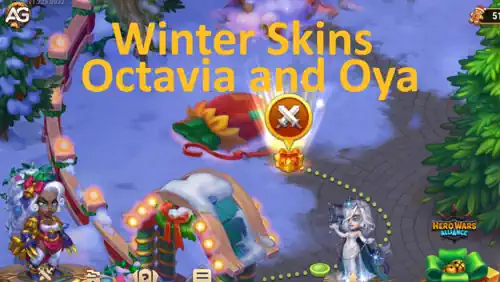

A introdução dos Skins de Inverno para Octavia e Oya nas atualizações recentes do jogo gerou grande entusiasmo entre os jogadores. Esses designs visualmente cativantes não apenas adicionam um toque festivo e sazonal aos heróis, mas também têm implicações importantes para o gameplay e o desempenho geral dos heróis.
Além de seu apelo estético, seu verdadeiro valor está nas vantagens estratégicas que oferecem ao aprimorar atributos-chave. Para entender completamente seu impacto, é crucial avaliar como esses skins influenciam atributos críticos, determinar a melhor ordem para as atualizações e garantir que complementem efetivamente as habilidades centrais dos heróis e as sinergias da equipe.
Este guia fornecerá uma análise abrangente dos Skins de Inverno de Octavia e Oya, com foco no design, bônus de atributos e impacto no gameplay. Você aprenderá como priorizar as atualizações, alinhar esses skins com as habilidades únicas de cada herói e maximizar sua eficácia em diversas composições de equipe. Seja você um jogador casual ou um estrategista, este guia ajudará a tomar decisões informadas para aprimorar seu desempenho.

Skins de inverno de Octavia e Oya em ação no jogo Hero Wars Alliance, desenvolvido pela Nexters.
Octavia: Equilibrando Agilidade e Suporte com Skins de Inverno
O papel de Octavia como heroína de suporte é único. Suas habilidades focam em proteger aliados enquanto aumentam seus ganhos de energia por meio de esquiva estratégicas. No entanto, sua nova Skin de Inverno prioriza estatísticas de esquiva, o que pode não ser o caminho mais eficaz de aprimoramento.
Habilidade Guarda Imperial e Suas Implicações
A Guarda Imperial é a habilidade característica de Octavia. Esta habilidade permite que ela evite ser alvo de habilidades e ataques inimigos, desde que seus aliados iniciais permaneçam vivos. Quando aliados desviam de ataques, tanto Octavia quanto sua Guarda recebem aumentos de energia.
Embora a Skin de Inverno aumente sua estatística de esquiva, vale ressaltar que Octavia só pode desviar de ataques básicos, não de habilidades. Isso limita os benefícios diretos das estatísticas de esquiva. Para otimizar seu desempenho, focar em ataques físicos e saúde é mais benéfico.
Prioridade e Análise das Skins de Octavia
1ª Prioridade: Skin Celestial+ (Ataque Físico)
A Skin Celestial+ oferece um aumento duplo no ataque físico, o que aprimora significativamente suas habilidades de suporte ao aumentar a potência de suas habilidades.
2ª Prioridade: Skin Cibernética (Ataque Físico)
Esta skin oferece um aumento sólido no ataque físico. Embora não seja tão poderosa quanto a Skin Celestial+, ainda é uma opção forte para melhorar seu suporte e potencial de dano.
3ª Prioridade: Skin Romântica (Saúde)
Com esta skin, Octavia ganha um aumento substancial de saúde, melhorando sua sobrevivência e permitindo que ela permaneça ativa na batalha por mais tempo.
4ª Prioridade: Skin Padrão (Agilidade)
A skin padrão oferece um aumento moderado na agilidade. Embora a agilidade contribua para suas estatísticas gerais, ela fica aquém quando comparada aos aprimoramentos de ataque físico e saúde.
5ª Prioridade: Skin de Inverno (Desvio)
A Skin de Inverno melhora as estatísticas de esquiva, mas sua utilidade é limitada devido às mecânicas específicas das habilidades de Octavia. Isso a torna uma prioridade menor para sua eficácia geral.
Recomendações Estratégicas para Octavia
Para maximizar o desempenho de Octavia, priorize skins que aumentem o ataque físico e a saúde antes de considerar opções focadas em agilidade ou esquiva. Seu papel como heroína de suporte se beneficia mais do aumento da produção de dano e sobrevivência do que das capacidades aprimoradas de esquiva.
Oya: Equilibrando Força de Guerreiro e Durabilidade de Tank
Como guerreira de linha de frente, Oya depende de sua principal estatística de Força para dominar na batalha. Suas habilidades exigem um equilíbrio entre ataque físico e saúde, fazendo dela um híbrido entre guerreira e tank. A nova Skin de Inverno, embora visualmente impressionante, adiciona armadura um atributo valioso, mas menos crítico em comparação com força e saúde.
A Força das Habilidades de Oya
As habilidades de Oya focam em causar dano enquanto suportam os ataques inimigos. Priorizar sua estatística de Força não só aumenta seu poder ofensivo, mas também melhora sua sobrevivência como uma guerreira com características de tank.
Prioridade e Análise das Skins de Oya
1ª Prioridade: Skin de Força (+1365 de Força)
Esta skin oferece um aumento significativo na estatística principal de Oya, tornando-a a melhor escolha para melhorar tanto sua produção de dano quanto sua durabilidade.
2ª Prioridade: Skin de Saúde+ (+213.290 de Saúde)
A saúde é essencial para que Oya sustente sua posição na linha de frente. A Skin de Saúde+ oferece um aumento maciço, garantindo que ela possa absorver mais dano durante as batalhas.
3ª Prioridade: Skin de Ataque Físico (+7095 de Ataque Físico)
Esta skin aprimora as capacidades ofensivas de Oya, aumentando sua estatística de ataque físico, tornando-a uma guerreira mais formidável.
4ª Prioridade: Skin de Inverno (+10.650 de Armadura)
A Skin de Inverno adiciona um considerável aumento de armadura, melhorando sua capacidade de tank. No entanto, a armadura tem menos impacto em comparação aos benefícios fornecidos pela força e saúde.
Recomendações Estratégicas para Oya
A Skin de Inverno de Oya é visualmente atraente, mas deve ser considerada um aprimoramento secundário. Foque primeiro nas skins que aprimoram sua Força, Saúde e Ataque Físico, alinhando-se com seu papel duplo de guerreira e tank.
Análise Comparativa: Skins de Inverno de Octavia vs. Oya
As Skins de Inverno de ambos os heróis oferecem aumentos defensivos esquiva para Octavia e armadura para Oya. No entanto, a priorização dentro da construção de cada herói diverge com base em suas habilidades e papéis únicos.
Octavia: Seu papel de suporte exige priorizar ataque físico e saúde para maximizar o ganho de energia e sustentar os aliados. Estatísticas focadas em esquiva, como as fornecidas pela Skin de Inverno, são menos impactantes.
Oya: Seu papel híbrido se beneficia mais de força e saúde para equilibrar a produção de dano e a sobrevivência. O aumento de armadura da Skin de Inverno é útil, mas não essencial.
Maximizando o Valor das Skins de Inverno no Gameplay
Embora as Skins de Inverno adicionem um charme sazonal, elas devem ser integradas de forma estratégica no plano de progressão de cada herói. Priorize skins com base nos aumentos de atributos que se alinham com os pontos fortes e habilidades centrais do herói. Para jogadores que buscam aproveitar ao máximo seus investimentos, um planejamento cuidadoso pode transformar esses aprimoramentos cosméticos em ativos estratégicos.
Perguntas Frequentes
Como a Skin de Inverno de Octavia impacta seu gameplay?
A Skin de Inverno aumenta as estatísticas de esquiva de Octavia, mas seu impacto é limitado, já que suas habilidades focam mais no ganho de energia de desvios dos aliados do que nos dela mesma.
Por que a esquiva é uma prioridade baixa para Octavia?
Octavia só pode esquivar de ataques básicos e se tornará o alvo das habilidades inimigas somente se for a última aliada restante. Isso torna a estatística de esquiva menos impactante em comparação ao ataque físico e saúde, que aumentam diretamente sua eficácia geral.
A Skin de Inverno de Oya vale a pena ser aprimorada?
A Skin de Inverno de Oya oferece um aumento de armadura, que é útil, mas deve ser uma prioridade menor em comparação com skins que aprimoram sua força e saúde.
Qual é a melhor skin para Octavia?
A Skin Celestial+ é a melhor escolha para Octavia, proporcionando um aumento duplo no ataque físico e melhorando significativamente suas capacidades de suporte.
Qual estatística é mais importante para Oya?
Força é a estatística mais importante para Oya, pois aumenta tanto suas capacidades ofensivas quanto defensivas.
As Skins de Inverno podem ser usadas de forma eficaz?
Sim, as Skins de Inverno podem ser eficazes quando usadas estrategicamente. Para Octavia, elas podem ser uma opção decorativa, enquanto para Oya, elas adicionam capacidade de tank para cenários específicos de batalha.
Conclusão
As Skins de Inverno de Octavia e Oya são belamente desenhadas e adicionam um charme sazonal ao jogo. No entanto, seu verdadeiro valor está em como se alinham com as mecânicas de gameplay de cada herói. Para Octavia, focar em ataque físico e saúde continua sendo a estratégia mais eficaz, enquanto para Oya, priorizar força e saúde garante que ela possa se destacar como um híbrido de guerreiro e tank. Ao entender os pontos fortes e limitações dessas skins, os jogadores podem tomar decisões informadas para aprimorar o desempenho de seus heróis.
Explore novas habilidades com nossos heróis em destaque!
Você gostou das nosso guia das skin de inverno da Octavia e da Oya? Há algo que não entendeu ou gostaria de sugerir mudanças? Convidamos você a se juntar à nossa sessão de comentários na página do Alexandre Games Blog. Não hesite em expressar sua opinião, clarificar suas dúvidas e compartilhar sua sugestões. Clique no botão abaixo para começar: